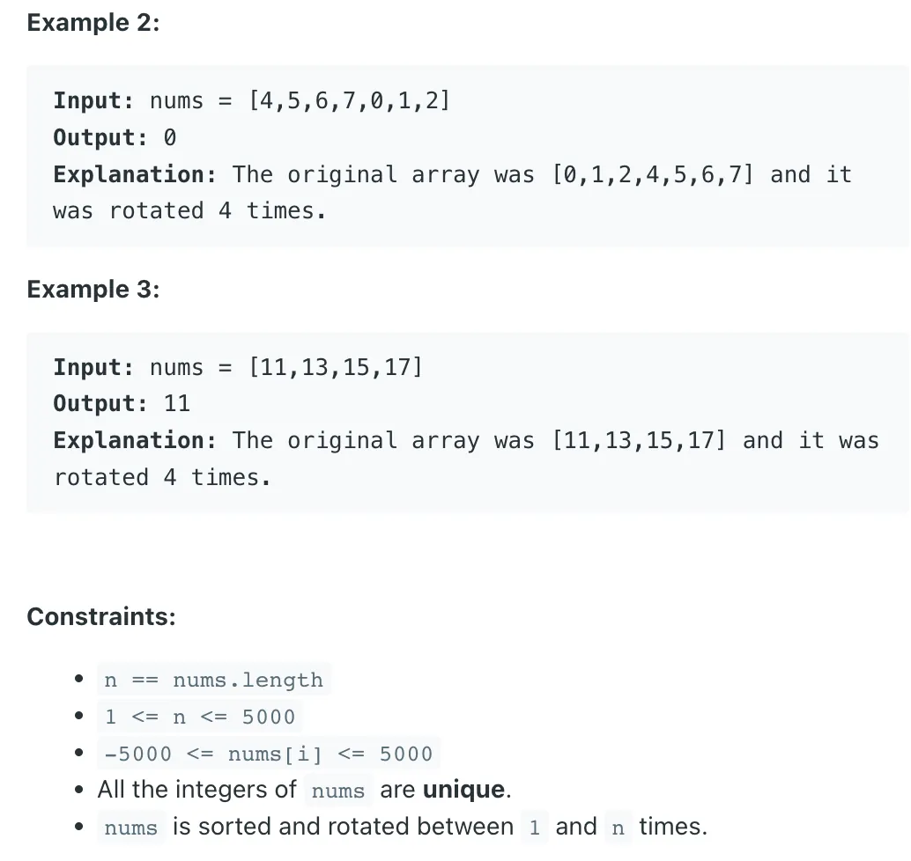

153. Find Minimum in Rotated Sorted Array
考過的公司：Asked by: Amazon, Bytedance
Question


✍🏽 My Solution
Runtime: 0 ms, faster than 100.00% of Java online submissions for Find Minimum in Rotated Sorted Array. Memory Usage: 43.2 MB, less than 6.32% of Java online submissions for Find Minimum in Rotated Sorted Array.
class Solution {
public int findMin(int[] nums) {
int n = nums.length;
int low = 0;
int high = n-1;
while (low <= high) {
int mid = low+(high-low)/2;
if (low == high) {
return nums[mid];
}
if ((mid != 0 && nums[mid] < nums[mid-1]) || (mid == 0 && nums[mid] < nums[high])) {
return nums[mid];
} else if (nums[mid] < nums[high]) { // the mininum is in the left part
high = mid - 1;
} else { // the mininum is in the right part
low = mid + 1;
}
}
return -1;
}
}
🧠 Thought Process
- Why did I choose this particular implementation?
- 二分查找
- What is the time/space complexity of my solution? How do I know?
- time: O(logn)
- space: O(1)
Solution #1 [偏好這個解法]
Runtime: 0 ms, faster than 100.00% of Java online submissions for Find Minimum in Rotated Sorted Array. Memory Usage: 42.8 MB, less than 32.21% of Java online submissions for Find Minimum in Rotated Sorted Array.
class Solution {
public int findMin(int[] nums) {
int n = nums.length;
int left = 0;
int right = n-1;
if (n == 1 || nums[0] < nums[n-1]) {
return nums[0];
}
while (left <= right) {
int mid = left + (right - left) /2;
if (mid > 0 && nums[mid] < nums[mid-1]) {
return nums[mid];
} else if (nums[mid] < nums[right]) { // search the minimum in the left side
right = mid - 1;
} else { // search the minimum in the right side
left = mid + 1;
}
}
return -1;
}
}
Explanation (in my words)
-
How does their solution work?
- 首先，我們檢查邊緣情況（當最小數的索引為 0 時）： 如果 len(nums) == 1 返回 nums[0] 如果 nums[0] < nums[n-1] 返回 nums[0]
- Binary search, left = 0, right = n-1 mid = (left + right) / 2
- If nums[mid-1] > nums[mid] then nums[mid] is the minimum
- If nums[mid] > nums[right] then search on the right side, because smaller elements are in the right side
- Else search on the left side.
- 邊界條件會寫錯
-
What is the space/time complexity of their solution?
- time: O(logn)
- space: O(1)